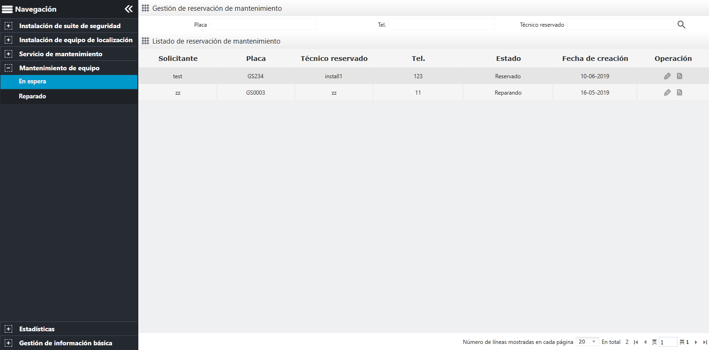

Gestión de mantenimiento en espera
Haga clic en en la barra del menú de navegación para ingresar a la “Gestión de reservación de mantenimiento”, como se muestra a continuación.
 Note:
Note:

Fig 110 Gestión de mantenimiento en espera
| • | Haga clic en el botón 〖 |
| • | Haga clic en el botón 〖 |
| • | La solicitud de y “Listado de reservación de mantenimiento” proviene de la aplicación de reparación en , que solo se puede editar y no se puede eliminar. |
| • | El estado de solicitud de reparación debe editarse dos veces. La primera modificación de “Fecha de inicio”, el estado se cambia a reparar, la segunda modificación “Hasta” que cambia el estado a reparado, estará en y “Listado de mantenimiento” para ver agregar el registro reparado recién. |